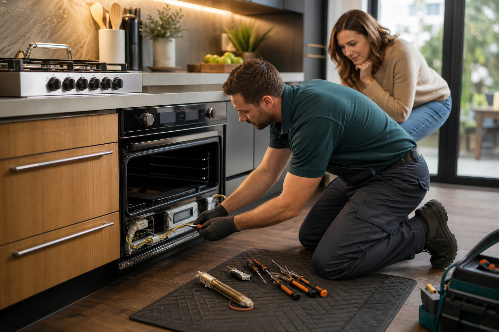
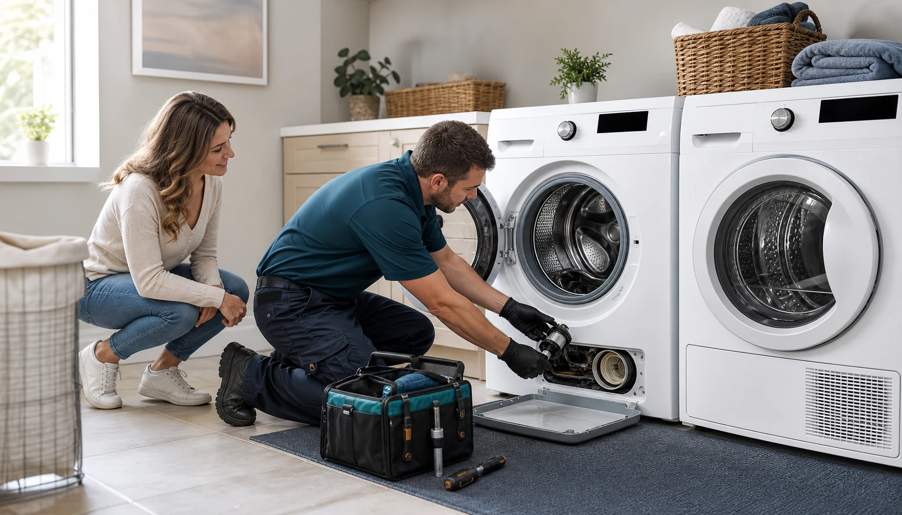
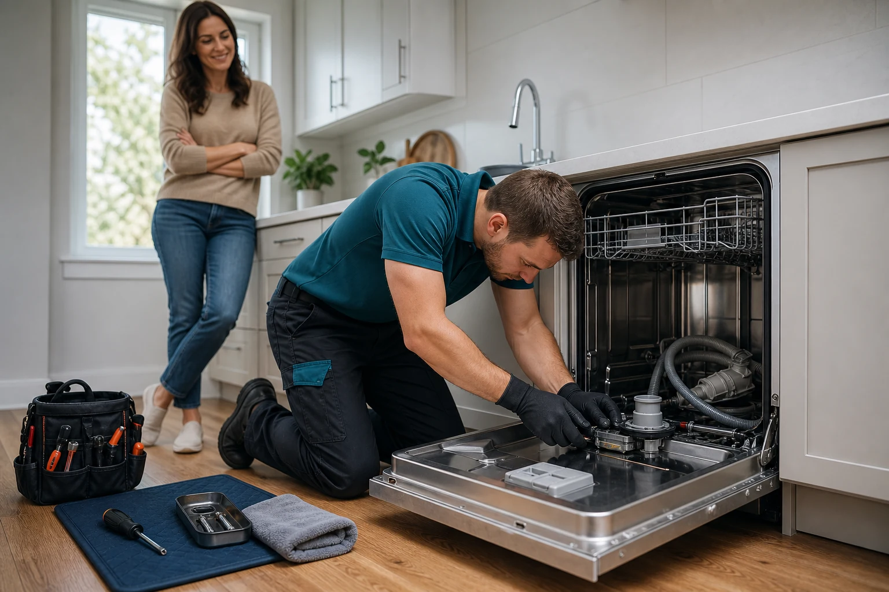

Appliance repair, coordinated locally.
Appliance Atlas matches customers with capable local providers for refrigerator, oven, washer, dryer, dishwasher, and specialty appliance issues. Clear intake, practical troubleshooting, and service categories built for real repair workflows.
Start with the appliance and the symptom.
Most repair requests become clearer when they are grouped by the system that failed: cooling, cooking, laundry, or dishwashing.
Refrigerator, oven, washer, dryer, dishwasher, or related system.
No cooling, no heat, leak, noise, poor cleaning, drain issue, or error code.
The request can be routed to a suitable independent provider in your area.
What stopped working?
Start with the appliance system. Each route captures different symptoms, parts, access needs, and diagnostic steps.
View all service groups Refrigeration repairCooling failures usually need faster routing.
Refrigeration repairCooling failures usually need faster routing.

CookingHeat, ignition, controls
LaundryWater, spin, heat, airflow
DishwashingDrain, fill, pump, leaks
Refrigeration repairHelp for refrigerators, freezers, ice makers, cooling loss, frost buildup, leaks, seals, fans, and water systems.
Not cooling, ice maker, leaks, fan noiseView service page Cooking appliance repairService routing for ovens, ranges, cooktops, microwaves, burners, igniters, temperature drift, and control issues.
No heat, ignition, uneven baking, controlsView service page Laundry appliance repairSupport for washer drainage, spin, leaks, locked doors, dryer heat, venting, rollers, belts, and airflow problems.
Won't drain, no heat, spin, airflowView service page Dishwashing systemsRouting for dishwasher leaks, standing water, pump issues, inlet valves, spray arms, poor cleaning, and fill symptoms.
Leaks, standing water, poor cleaning, fill issuesView service pageFrom vague appliance trouble to a useful repair request.
A strong aggregator experience starts before dispatch. Appliance Atlas frames the issue by system, symptom, urgency, access, and likely diagnostic path so customers and providers begin with the same practical context.
Cooling, heat, water, motion, airflow, power, noise, and error-code details.
ZIP code, appliance type, property access, urgency, and service window expectations.
Providers receive better notes, customers get clearer expectations, and fewer appointments start cold.
Prepared visits feel different from generic lead generation.
The site is structured to support real service readiness: the right appliance category, useful symptoms, common parts awareness, and safer expectations around diagnosis, estimates, and repair feasibility.
Built for trust before the first appointment.
Customers need clarity. Providers need useful details. The site turns vague appliance trouble into structured intake and realistic expectations.
Symptom intake
Collect appliance type, brand if known, error codes, age, urgency, and visible symptoms.
Provider match
Route by category, location, capability, parts needs, and practical scheduling window.
On-site diagnosis
Technicians confirm power, controls, mechanical condition, leaks, heating, cooling, and safety.
Repair path
Customers receive a clear next step: repair, parts order, maintenance, or replacement guidance.
Common appliance repair questions.
Clear answers help homeowners decide what details to share before a provider is matched or a diagnostic visit is scheduled.
Is Appliance Atlas the company performing the repair?
No. Appliance Atlas is a coordination and aggregator service that helps connect homeowners with independent local appliance repair providers.
What information should I have ready?
Share the appliance type, symptom, approximate age, brand or model if easy to find, error codes, and whether the issue involves water, heat, cooling, power, or noise.
Can a provider tell me the exact repair price before diagnosis?
Usually not with accuracy. Many appliance issues require on-site testing before a provider can confirm the failed part, labor scope, and repair feasibility.
Do you cover urgent appliance problems?
The site supports urgent intake for issues like refrigerator cooling loss, active leaks, no-heat cooking appliances, and washer or dryer downtime. Availability depends on local providers.